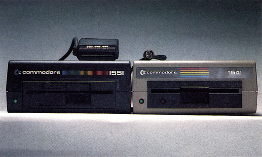
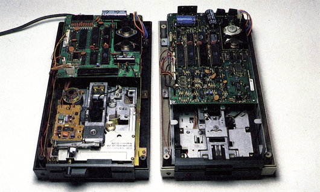
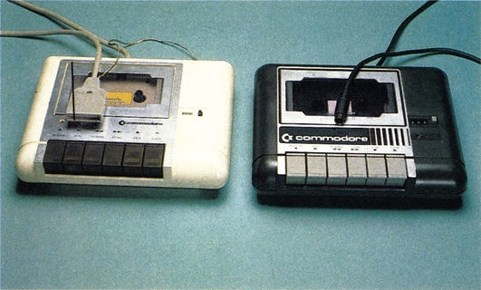
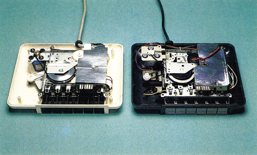
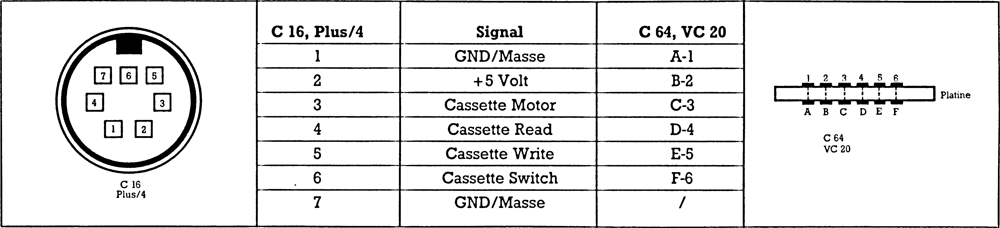
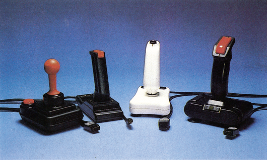
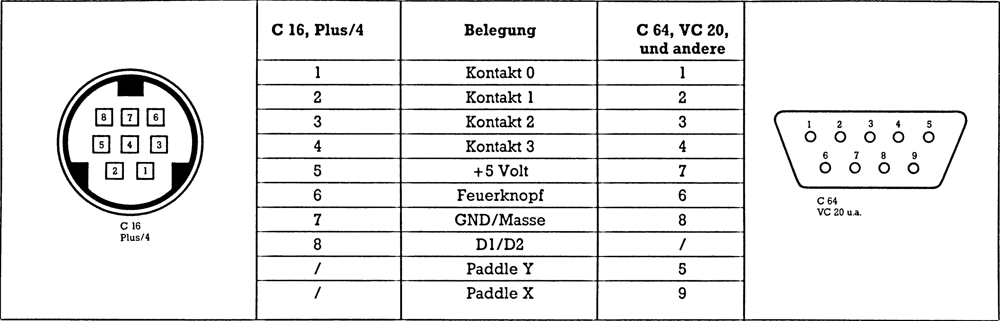

Anschlußprobleme
Sie haben einen C 16 oder Plus/4? Dann benötigen Sie auch eine Datasette oder ein Diskettenlaufwerk. Wir haben das 1551-Diskettenlaufwerk, die 1531-Datasette und den Joystick des C 16 mit den entsprechenden Geräten für den C 64 verglichen.
Kurz vorweg: Wenn wir im folgenden vom C 16 sprechen, so sind damit ebenso der C 116 und der Plus/4 gemeint, da diese bis auf die Gehäuse fast identisch sind (siehe dazu auch den Artikel »Die (un)gleichen Brüder C 16 und Plus/4« im 64'er-Magazin, Ausgabe 12/86).
Für den C 16 gibt es zwei Arten von Massenspeichern: Die erste (und preiswertere) ist die Datasette. Sie speichert Ihre Programme oder Daten auf eine handelsübliche Musikkassette. Sie trägt in der zum C 16 passenden Version die Bezeichnung 1531. Als zweite Möglichkeit bietet sich ein Diskettenlaufwerk an.
Der C 16-Besitzer kann zwischen zwei Commodore-Laufwerken auswählen: Es gibt einmal die Floppy 1541, die schon vom C 64 her bekannt ist und zum anderen die 1551, die speziell für den C 16 entwickelt wurde. Beiden Geräten gemeinsam (und charakteristisch für Commodore) sind die eingebauten Prozessoren 6502 beziehungsweise 6510. Das bedeutet, daß jedes Laufwerk für sich bereits einen kompletten Computer mit RAM, Betriebssystem-ROM und Prozessor darstellt. Befehle, wie zum Beispiel »formatiere eine Diskette« oder »lösche ein Programm von der Diskette« werden von der 1541 und der 1551 ohne Hilfe des Computers ausgeführt. Beide Laufwerke verfügen über denselben Befehlssatz und dasselbe Diskettenformat. Basic-Programme, die an die 1541 Kommandos übergeben, funktionieren also auch mit der 1551. Letztere hat lediglich drei Befehle zusätzlich spendiert bekommen. Diese werden jedoch so selten benötigt, und dann nur von eingefleischten Profis, daß wir sie hier vernachlässigen können.
Wesentlich bedeutender ist folgender Unterschied zwischen den beiden Floppylaufwerken: Wenn Sie eine 1541 an Ihren C 16 anschließen wollen, so verwenden Sie dazu das Kabel für den seriellen Bus. Zu diesem Zweck existiert sowohl am Computer als auch am Diskettenlaufwerk jeweils eine Buchse. Diese sind am C 64 und am C 16 absolut identisch. Beim 1551-Laufwerk verhält es sich mit dem Anschluß etwas anders: Es wird mit einem Kabel, an dem sich ein Kästchen mit einer Steckleiste befindet, an den Erweiterungs-Port des Computers angeschlossen (siehe dazu auch Bild 1). Diese Verbindung erlaubt eine höhere Übertragungsgeschwindigkeit im Gegensatz zur 1541. Mit der 1551 kann man ungefähr viermal schneller Programme laden, als mit der 1541. Leider hat die 1551 zum Anschluß an den Computer nur dieses eine Kabel. Sie läßt sich also ausschließlich am C 16 und Plus/4 betreiben, wohingegen die 1541 am C 16 und am C 64 angeschlossen werden kann.

Ein Gehäuse — zwei Laufwerke
Schraubt man die 1551 auf und stellt eine offene 1541 daneben (Bild 2), so fallen sofort weitere Unterschiede ins Auge, die sich aber nicht auf die Kompatibilität auswirken. So enthält die 1551 zum Beispiel eine vollkommen neue Platine, auf der auch mit völlig anderen Bauteilen gearbeitet wird. Die Steuerung der Datenübertragung zwischen Diskette und Floppystation, und Floppystation und Computer wird bei der 1541 von zwei VIA 6522-Chips erledigt. Bei der 1551 ist nur ein einziger Baustein aktiv und zwar ein TIA 6525, der aber die Aufgaben ebenso effektiv wie die beiden VIAs 6522 erledigt. Der einzige Nachteil, den die 1551 gegenüber der 1541 besitzt, ist der schon erwähnte Anschluß an den Computer, der dieses Laufwerk vollkommen auf den C 16 spezialisiert. Übrigens: Im 64'er-Magazin, Ausgabe 9/86, finden Sie einen ausführlichen Testbericht über die 1551.

Für den »großen« C 128 entwickelte Commodore bei seinem Erscheinen ebenfalls eine neue Diskettenstation. Dieses 1571-Laufwerk läßt sich im Gegensatz zur 1551 problemlos an den C 64 und damit auch an den C 16 anschließen. Sie verfügt nämlich wie die 1541 auch über eine serielle Buchse. Der Vorteil dieses Laufwerks liegt in der qualitativ etwas besseren Mechanik und der Möglichkeit, Disketten doppelseitig ohne Wenden beschreiben zu können. Als weitere Besonderheiten verfügt die 1571 zum Beispiel über einen 2-Megahertz-Modus, der in Verbindung mit dem C 128 eine zweimal höhere Geschwindigkeitsübertragung erlaubt. Auch kann dieses Laufwerk das CP/M-Format lesen. Diese Möglichkeiten lassen sich mit dem C 16 jedoch ohne beträchtlichen Programmieraufwand nicht nutzen.
Die »neue« Datasette
Soviel zum Thema Floppystation für den C 16. Wie eingangs bereits erwähnt, haben Sie auch noch die Möglichkeit, eine Datasette an den Computer anzuschließen. Sie ist relativ oft eine Alternative zu einem Diskettenlaufwerk, da sie preislich sehr viel günstiger als das Diskettenlaufwerk liegt (Floppystation um 600 Mark, Datasette um 100 Mark). Den niedrigeren Preis erkaufen Sie sich aber auch mit einigen Nachteilen, die von der Verarbeitungsgeschwindigkeit über den Bedienungskomfort bis hin zur Verwaltung von Daten reichen.
Wer früher schon einmal auf einem C 64 oder VC 20 gearbeitet hat und dann auf einen C 16 umgestiegen ist, wird zustimmen: Das Ärgerlichste an den neuen Geräten ist die Inkompatibilität der Anschlußbuchsen. Im Klartext: Am C 16 lassen sich weder Joysticks, noch Netzteile, noch Erweiterungen für den Expansion-Port des C 64 anschließen. Dasselbe gilt für die Datasette 1530 für den C 64.
Daß aber die beiden Datasetten trotz unterschiedlicher Gehäusefarbe ein bis auf unwesentliche Details identisches Innenleben aufweisen, sehen Sie in Bild 3. Dennoch hat Commodore bei der »neuen« Datasette einen völlig anderen Stecker eingebaut.


Manche C 16-Besitzer haben noch eine »alte« C 64-Datasette, Modell 1530, oder könnten eine solche preiswert erstehen. Um diese an den C 16 anzuschließen, gibt es zwei Möglichkeiten:
— Man besorgt sich im Fachhandel einen Adapterstecker, oder
— man bastelt sich selbst einen.
Allen »Lötkolbenprofis« unter unseren Lesern wollen wir in Bild 4 einen Vergleich der Datasettenbuchsen des C 64 und des C 16 geben. Mit den Skizzen und der Tabelle ausgerüstet, ist es ein leichtes, einen Adapterstecker oder ein Adapterkabel selbst zu bauen. Die dazu erforderlichen Stecker und Buchsen erhalten Sie in den meisten Elektronikläden. Beachten Sie aber, daß die Skizze die Buchsen am Computer darstellt. Für die dazugehörigen Stecker müssen Sie sich die Zeichnung spiegelverkehrt vorstellen.

Ein weiterer positiver Aspekt für die Bastelarbeit: Es gibt mittlerweile Hersteller, die (meist preiswertere) Alternativen zur C 64-Datasette anbieten. Mit Hilfe von Bild 4 lassen sich diese dann auch an den C 16 anschließen.
Ein interessantes Phänomen darf an dieser Stelle nicht unerwähnt bleiben: Wenn ein Programm auf einem C 64 mit der Datasette gespeichert wurde, läßt es sich mit einem C 16 nicht mehr laden, und umgekehrt. Die Computer haben nämlich unterschiedliche Routinen zum Betrieb der Datasetten. Daher sind auch die Aufzeichnungsformate verschieden. Wir werden allerdings in unserem nächsten C 16-Sonderheft ein Programm für den C 64 veröffentlichen, das Abhilfe schafft. Damit lassen sich Programme von einem C 64 so auf Band schreiben, daß sie von einem C 16 aus geladen werden können.
Der »neue« Joystick
Für die meisten Spiele benötigen Sie einen Joystick zur Steuerung. Farblich passend zum C 16 und der Datasette 1531, verkauft Commodore auch einen neuen Joystick zum C 16. Da leider auch die Joystick-Buchse des C 16 gegenüber dem C 64 geändert wurde (Bild 5), sind die meisten C 16-Fans auf diesen »neuen« (und qualitativ nicht sehr guten) Commodore-Joystick angewiesen. »Leider« auch deshalb, weil diese Joystick-Buchse mittlerweile zum Standard geworden ist. Die Firma Atari hat ihre ersten (und sehr erfolgreichen) Spielecomputer mit diesen Joystick-Buchsen ausgerüstet. Commodore hat diese erst am VC 20 und dann am C 64 übernommen. Deshalb kann der C 64-Benutzer unter einer riesigen Auswahl von verschiedenen Herstellern seinen »Traum-Joystick« aussuchen, der sich aber an den C 16 nicht ohne Bastelei anschließen läßt.

Bild 6 zeigt die Belegungspläne der Buchsen am C 16 und C 64 im Vergleich. Wenn Sie einen C 64-Joystick an den C 16 anschließen wollen, müssen Sie die Kontakte 0 bis 3, Feuerknopf und Masse C 16 mit den entsprechenden Leitungen des Joysticks verbinden.

Denkbar wäre auch, zwei fertig verdrahtete C 64-Buchsen (Joy 1 und Joy 2) in das Gehäuse des C 16 einzubauen. Dann können Sie jederzeit den passenden Joystick anschließen.
Wir hoffen, Ihnen in diesem Artikel einige nützliche Hinweise gegeben zu haben.
(tr)